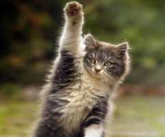
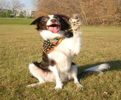

Котката
Домашната котка е в състояние да убие или изяде представители на няколко хиляди други животински вида. За сравнение, повечето от големите котки се хранят с не повече от...

Кучето
Кучетата (Canis lupus familiaris) са средноголеми бозайници, подвид на вълците (Canis lupus), опитомен още от зората на човечеството.Едни от първите домашни животни...